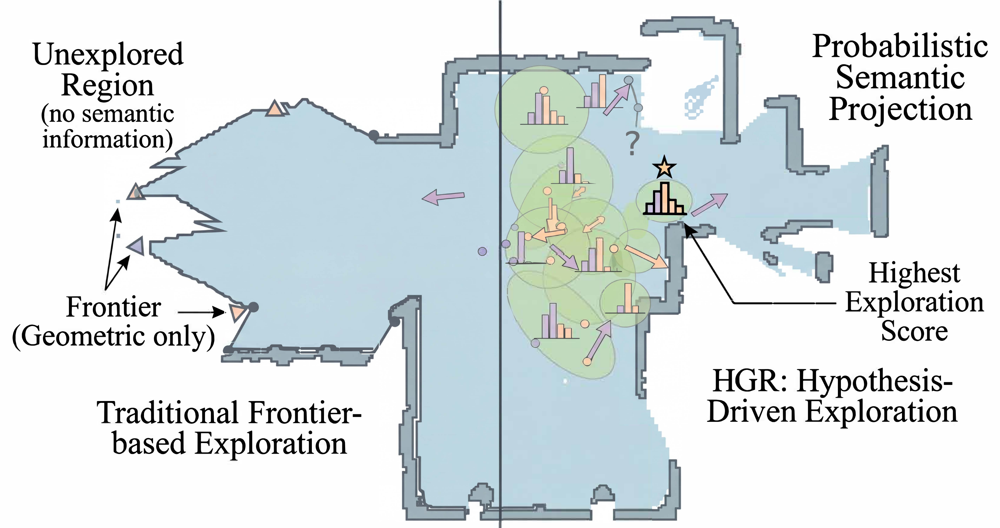
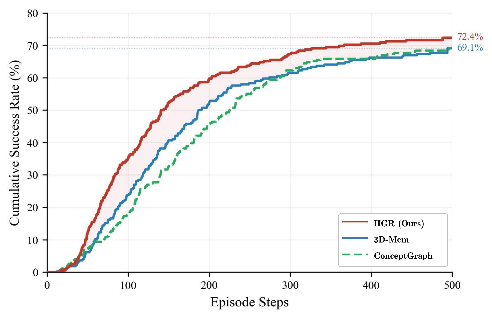
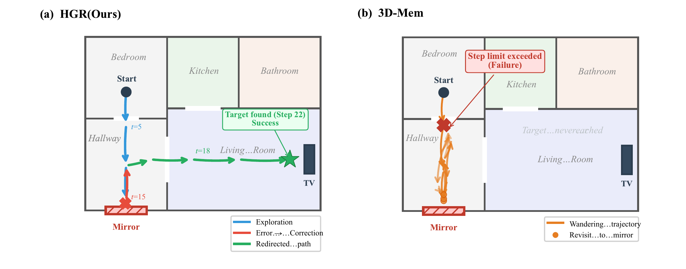

Abstract
Embodied agents must explore partially observed environments while maintaining reliable long-horizon memory. Existing graph-based navigation systems improve scalability, but they often treat unexplored regions as semantically unknown, leading to inefficient frontier search. Although vision-language models (VLMs) can predict frontier semantics, erroneous predictions may be embedded into memory and propagate through downstream inferences, causing structural error accumulation that confidence attenuation alone cannot resolve. These observations call for a framework that can leverage semantic predictions for directed exploration while systematically retracting errors once new evidence contradicts them. We propose Hypothesis Graph Refinement (HGR), a framework that represents frontier predictions as revisable hypothesis nodes in a dependency-aware graph memory. HGR introduces (1) semantic hypothesis module, which estimates context-conditioned semantic distributions over frontiers and ranks exploration targets by goal relevance, travel cost, and uncertainty, and (2) verification-driven cascade correction, which compares on-site observations against predicted semantics and, upon mismatch, retracts the refuted node together with all its downstream dependents. Unlike additive map-building, this allows the graph to contract by pruning erroneous subgraphs, keeping memory reliable throughout long episodes. We evaluate HGR on multimodal lifelong navigation (GOAT-Bench) and embodied question answering (A-EQA, EM-EQA). HGR achieves 72.41% success rate and 56.22% SPL on GOAT-Bench, and shows consistent improvements on both QA benchmarks. Diagnostic analysis reveals that cascade correction eliminates approximately 20% of structurally redundant hypothesis nodes and reduces revisits to erroneous regions by 4.5×, with specular and transparent surfaces accounting for 67% of corrected prediction errors.
Overview

Method
HGR addresses two intertwined challenges: frontiers lack semantic cues for efficient exploration, yet VLM-based predictions risk embedding errors that propagate over long horizons.

Hypothesis Graph Representation
The graph G = (V, E, D) separates observed nodes (verified regions) from hypothesis nodes (frontier predictions). A dependency DAG D records derivation relationships, enabling systematic retraction when nodes are invalidated.
Semantic Hypothesis Module
Projects probabilistic semantic distributions onto frontiers using VLM world knowledge. Exploration scoring balances goal alignment, travel cost, and uncertainty bonus (Shannon entropy) for directed frontier selection.
Verification-Driven Cascade Correction
Upon visiting a hypothesis node, computes a prediction residual combining category mismatch, CLIP feature divergence, and object Jaccard dissimilarity. Refuted nodes trigger BFS traversal of the dependency DAG, removing the entire erroneous subgraph.


Experimental Results
GOAT-Bench: Multimodal Lifelong Navigation
HGR achieves the highest success rate and path efficiency on both the full validation set (2,780 subtasks) and the evaluation subset (278 subtasks).
| Method | Full Validation Set | Subset | ||
|---|---|---|---|---|
| SR ↑ | SPL ↑ | SR ↑ | SPL ↑ | |
| ConceptGraph | 61.2 | 44.3 | 67.8 | 48.1 |
| 3D-Mem w/o memory | 58.6 | 38.5 | 66.2 | 44.1 |
| 3D-Mem | 62.9 | 44.7 | 69.1 | 48.9 |
| HGR (Ours) | 64.14 | 50.1 | 72.41 | 56.22 |

Performance by Target Modality
HGR shows the largest gains on language-specified targets (+7.9% SR over 3D-Mem), as hypothesis nodes encode relational structure for disambiguating spatial references.
| Method | Category | Language | Image | |||
|---|---|---|---|---|---|---|
| SR | SPL | SR | SPL | SR | SPL | |
| ConceptGraph | 65.3 | 44.7 | 55.0 | 38.9 | 64.0 | 52.8 |
| 3D-Mem | 79.2 | 55.8 | 61.9 | 46.0 | 65.2 | 44.2 |
| HGR (Ours) | 80.9 | 60.3 | 69.8 | 54.5 | 68.2 | 61.7 |
Ablation Study
Systematic isolation of each component across all three benchmarks.
| Configuration | GOAT (Subset) | A-EQA | EM-EQA | |
|---|---|---|---|---|
| SR ↑ | SPL ↑ | LLM ↑ | LLM ↑ | |
| HGR (full system) | 72.41 | 56.22 | 55.9 | 58.3 |
| w/o Semantic hypothesis | 67.71 | 50.02 | 48.4 | 50.5 |
| w/o Cascade correction | 68.61 | 51.12 | 49.6 | 52.9 |
| Local delete only | 70.85 | 53.67 | 52.3 | 55.9 |
| w/o both (geometry only) | 63.42 | 45.33 | 43.3 | 45.2 |
Embodied Question Answering
A-EQA (Active Embodied QA)
| Method | LLM-Match ↑ | LLM-Match SPL ↑ |
|---|---|---|
| Blind LLMs (no visual input) | ||
| GPT-4o | 35.9 | — |
| Question Agnostic Exploration | ||
| LLaVA-1.5 Frame Captions | 38.1 | 7.0 |
| Multi-Frame | 41.8 | 7.5 |
| VLM-Guided Exploration | ||
| Explore-EQA | 46.9 | 23.4 |
| ConceptGraph w/ Frontier | 47.2 | 33.3 |
| HGR (Ours) | 55.9 | 45.0 |
EM-EQA (Episodic Memory QA)
| Method | Avg. Frames | LLM-Match ↑ |
|---|---|---|
| Blind LLM (GPT-4) | 0 | 35.5 |
| ConceptGraph Captions | 0 | 34.4 |
| Frame Captions | 0 | 38.1 |
| Multi-Frame | 3.0 | 48.1 |
| HGR (Ours) | 3.1 | 58.3 |
| Human (Full trajectory) | Full | 86.8 |
Diagnostic Analysis
Statistics on hypothesis lifecycle across the GOAT-Bench full validation set (2,780 subtasks).
Hypothesis Nodes Created
73.5% confirmed upon visitation, 26.5% refuted and removed.
Cascade Corrections Triggered
Average 2.8 dependent nodes removed per trigger, max cascade depth of 4 hops.
Revisit Reduction
Revisit rate: 4.2% for HGR vs. 18.7% for 3D-Mem, directly contributing to SPL improvement.
Mirror & Glass Errors
Specular (38%) and transparent (29%) surfaces are the dominant error source for VLM predictions.
Qualitative Results

BibTeX
@misc{chen2026hypothesisgraphrefinementhypothesisdriven,
title={Hypothesis Graph Refinement: Hypothesis-Driven Exploration with Cascade Error Correction for Embodied Navigation},
author={Peixin Chen and Guoxi Zhang and Jianwei Ma and Qing Li},
year={2026},
eprint={2604.04108},
archivePrefix={arXiv},
primaryClass={cs.CV},
url={https://arxiv.org/abs/2604.04108},
}